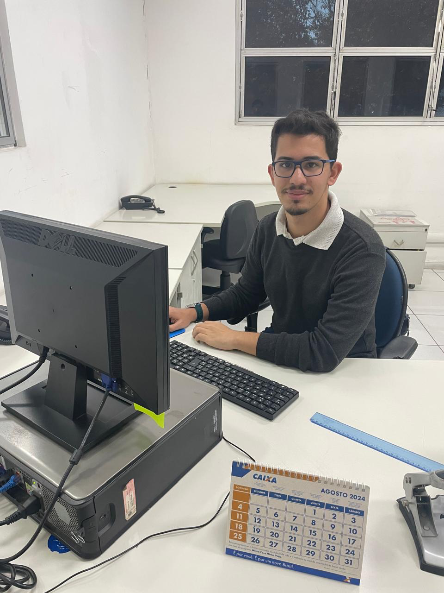

Meu nome é Nicolas Henrique Silva de Oliveira e sou estudante do curso de Desenvolvimento de Software Multiplataforma na Fatec Jacareí. Ao longo da graduação, venho desenvolvendo projetos acadêmicos envolvendo desenvolvimento web, aplicações e trabalho em equipe, buscando transformar conhecimentos teóricos em soluções práticas. Tenho interesse em programação, desenvolvimento de software e criação de projetos digitais, sempre procurando ampliar meus conhecimentos e aperfeiçoar minhas habilidades.
Meu objetivo profissional é atuar na área de desenvolvimento de software, colocando em prática os conhecimentos adquiridos durante a graduação e continuando minha evolução técnica. Tenho interesse principalmente em desenvolvimento web e na criação de aplicações, buscando participar de projetos que permitam aprender novas tecnologias, resolver problemas e desenvolver soluções úteis para os usuários.